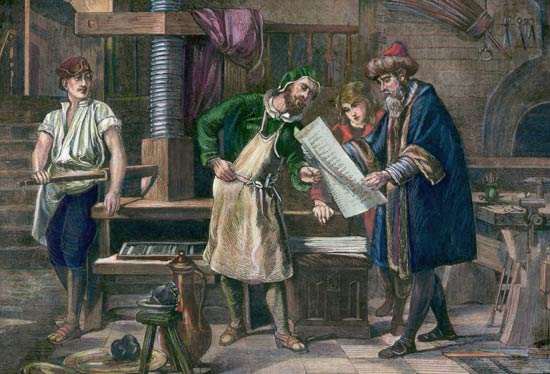

History of Printing
The history of printing goes back to the duplication of images by means of stamps in very early times. The use of round seals for rolling an impression into clay tablets goes back to early Mesopotamian civilization before 3000 BCE, they feature complex and beautiful images. In both China and Egypt, the use of small stamps for seals preceded the use of larger blocks. In China, India and Europe, printing on cloth certainly preceded printing on paper or papyrus. The process is essentially the same: in Europe special presentation impressions of prints were often printed on silk until the 17th century. The development of printing has made it possible for books, newspapers, magazines, and other reading materials to be produced in great numbers, and it plays an important role in promoting literacy.
Johannes Gutenberg
Johannes Gutenberg, in full Johann Gensfleisch zur Laden zum Gutenberg (born 14th century, Mainz [Germany]—died probably February 3, 1468, Mainz), German craftsman and inventor who originated a method of printing from movable type that was used without important change until the 20th century. The unique elements of his invention consisted of a mold, with punch-stamped matrices (metal prisms used to mold the face of the type) with which type could be cast precisely and in large quantities; a type-metal alloy; a new press, derived from those used in wine making, papermaking, and bookbinding; and an oil-based printing ink. None of these features existed in Chinese or Korean printing, or in the existing European technique of stamping letters on various surfaces, or in woodblock printing.
Life
Gutenberg was the son of a patrician of Mainz. What little information exists about him, other than that he had acquired skill in metalwork, comes from documents of financial transactions. Exiled from Mainz in the course of a bitter struggle between the guilds of that city and the patricians, Gutenberg moved to Strassburg (now Strasbourg, France) probably between 1428 and 1430. Records put his presence there from 1434 to 1444. He engaged in such crafts as gem cutting, and he also taught crafts to a number of pupils. Some of his partners, who became aware that Gutenberg was engaged in work that he kept secret from them, insisted that, since they had advanced him considerable sums, they should become partners in these activities as well. Thus, in 1438 a five-year contract was drawn up between him and three other men: Hans Riffe, Andreas Dritzehn, and Andreas Heilmann. It contained a clause whereby in case of the death of one of the partners, his heirs were not to enter the company but were to be compensated financially.
Invention Of The Press
When Andreas Dritzehn died at Christmas 1438, his heirs, trying to circumvent the terms of the contract, began a lawsuit against Gutenberg in which they demanded to be made partners. They lost the suit, but the trial revealed that Gutenberg was working on a new invention. Witnesses testified that a carpenter named Conrad Saspach had advanced sums to Andreas Dritzehn for the building of a wooden press, and Hans Dünne, a goldsmith, declared that he had sold to Gutenberg, as early as 1436, 100 guilders’ worth of printing materials. Gutenberg, apparently well along the way to completing his invention, was anxious to keep secret the nature of the enterprise.
After March 12, 1444, Gutenberg’s activities are undocumented for a number of years, but it is doubtful that he returned immediately to Mainz, for the quarrel between patricians and guilds had been renewed in that city. In October 1448, however, Gutenberg was back in Mainz to borrow more money, which he received from a relative. By 1450 his printing experiments had apparently reached a considerable degree of refinement, for he was able to persuade Johann Fust, a wealthy financier, to lend him 800 guilders—a very substantial capital investment, for which the tools and equipment for printing were to act as securities. Two years later Fust made an investment of an additional 800 guilders for a partnership in the enterprise. Fust and Gutenberg eventually became estranged, Fust, apparently, wanting a safe and quick return on his investment, while Gutenberg aimed at perfection rather than promptness.